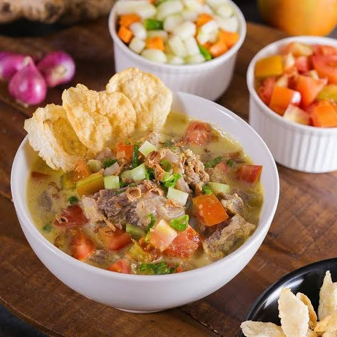

Soto Betawi

Klik disini untuk melihat cara pembuatannya.
Soto Betawi merupakan soto yang khas dari daerah DKI Jakarta. Seperti halnya Soto Madura dan Soto Sulung, soto Betawi juga menggunakan jeroan. Selain jeroan, sering kali organ-organ lain juga disertakan, seperti mata, terpedo, dan juga hati. Daging sapi juga menjadi bahan campuran dalam soto Betawi. Kuah soto Betawi merupakan campuran santan dan susu. Kedua campuran inilah yang membuat rasa soto Betawi begitu khas.
Bahan-bahan:
500 gram daging sanding lamur
2,5 liter air
200 gram babat dan rebus
200 gramparu dan rebus
2 ruas kayu manis
3 butir cengkih
4 batang serai
2 ruas lengkuas
10 lembar daun jeruk
3 lembar daun salam
1 sdt pala bubuk
4 sdt garam
1/2 sdt merica bubuk
2 sdt gula pasir
500 ml santan
2 sdm minyak goreng
Langkah:
- CRebus air dan daging sampai matang dan empuk. Potong 2x2 cm. Ambil kaldunya 2 liter dan rebus lagi.
- Masukkan daging, babat, dan paru lalu didihkan
- Panaskan minyak. Tumis bumbu halus, kayu manis, cengkih, serai, lengkuas, daun jeruk, dan daun salam sampai harum. Tuang ke dalam rebusan daging. Didihkan lagi.
- Masukkan santan, pala bubuk, garam, merica, dan gula. Masak sampai matang.
- Sajikan soto betawi bersama semua bahan pelengkap
Diterbitkan oleh Nadia